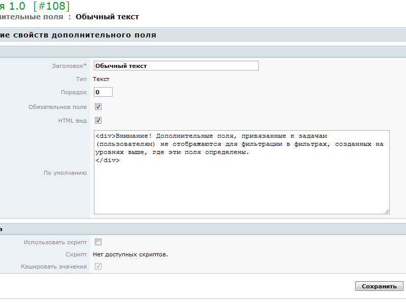

|
<< Click to Display Table of Contents >> Navigation: Rus > Руководство администратора > Как добавить свои поля в задачи > Дополнительное поле типа Текст |
Текст из нескольких строк, вводимый пользователем.

Текст не имеет ограничения по длине (значение по умолчанию ограничено 200 символами) и соответствует типу String в Java. На форме редактирования поле представлено областью ввода <TEXTAREA>, либо, при использовании формата HTML, WYSIWYG-редакторомtinyMCE.
Значение поля этого типа может выводиться как простой форматированный текстовый блок (<PRE>), либо как блок в формате HTML. Для защиты от XSS в поле можно выводить не все теги HTML, а также нельзя задавать тегам события javascript.
Если значение поля не задано, либо оно соответствует пустой строке, ни значение, ни заголовок поля не будут выводиться в просмотре задачи (пользователя). Значение вычисляемого поля задано всегда, но оно может оказаться пустым.
Внимание! Дополнительные поля, привязанные к задачам (пользователям) не отображаются для фильтрации в фильтрах, созданных на уровнях выше, где эти поля определены. Например, с помощью фильтра "Все задачи" нельзя выводить и фильтровать задачи по дополнительному полю, созданному на втором уровне иерархии.
Для того, чтобы искать задачи по дополнительному полю, вам нужно создать фильтр либо в той же задаче, где определено поле, либо в ее подзадачах. Удобнее всего скопировать для этого готовый фильтр.
Фильтрация задач по дополнительному полю типа Текст осуществляется по условиям:
•поиск по пустому значению
•поиск по совпадению
•поиск по несовпадению
•поиск по значениям, начинающимся с заданной строки
•поиск по значениям, содержащим заданную строку
•поиск по соответствию регулярному выражению
При фильтрации полей типа Текст по условию совпадения обращайте внимание на то, используется в поле вывод HTML или нет